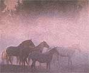

SEASONS
"The fog comes on little cat feet."
Fog may not seem like the most dramatic of weather phenomena to study. But if we think for a second we realize it is the entire background and setting for many a drama-certainly in spooky movies but also, and more important, in real life. It is a setter of mood, stirring various kinds of pondering in people. Unfortunately, it's also a danger. Late summer and early autumn are famous for those vast and majestic, but terrible beasts, known as hurricanes. I wonder, however, if more people have not died in cars on the roads in thick fog than have been killed in all hurricanes put together. Fog is beautiful and evocative, but it is also well to know some things about it to protect oneself-most notably, of course, when and where fog is likely to occur.
Actually, there are many kinds of fog. You can get fog by suddenly adding moisture to the air (steam fog or frontal fog). But most of us are more familiar with fog that occurs when air cools rather rapidly to the "dew point"-the saturation point of the air. The temperature doesn't have to drop much after a heavy rain soaks the ground for fog to materialize (though often such a rain could be associated with a frontal passage and brisk wind, which is, of course, fatal to the formation of fog). On the other hand, in August and September and for a while into the fall (periodically in winter), the temperature of a clear calm night may drop rapidly and enormously-and, if the air is not dry enough, fog will indeed form.
If the air temperature drops to a low enough reading, moisture may instead be deposited as frost. But it is quite possible to have ice fogs-in fact, they are common in some climates.
By definition, fog occurs when horizontal visibility is less than 1 kilometer (0.62 mile) and heavy fog when it is less than 0.4 kilometer (0.25 mile). According to weather historian and expert David M. Ludlum, the foggiest place on the U.S. West Coast is Cape Disappointment, Washington, at the mouth of the Columbia River. It averages 2,552 hours (which would add up to 106 complete days) of heavy fog a year. August and September tend to be the foggiest months of the year there. Pacific coastal locations may have fog every morning for long stretches in the summer. It is surprising that in number of days per year of heavy fog, San Francisco Airport's 18 days ranks behind those of San Diego and Los Angeles, which have 29 and 47 days, respectively ...but surely this is a matter of the precise locations of the airports.
The windward slopes of mountains actually produce more frequent fog at some inland locations than anywhere else. Places in West Virginia experience more than 100 days a year of heavy fog. On the Atlantic Coast, the heaviest fog is 1,580 hours a year at Moose Peak Lighthouse in Maine. Moose Peak Lighthouse is located on Mistake Island, by the way.
Fog is "nothing but cloud on the ground." Nothing but cloud on the ground? But that's an amazing concept! And more than one poet, amateur and professional, has written his or her own re action to it, if less famous than Carl Sandburg's:
The fog comes on little cat feet. It sits looking over the harbor and city on silent haunches and then moves on.
Comet Hale-Bopp was all that we could wish for this past spring. Almost everyone saw it and was thrilled by it. But it was still shining rather brightly back in May when it began setting too soon after the sun to see any longer. Now, in August and September, the comet actually emerges before morning twilight to provide one last view to folks in the Northern Hemisphere. It may still be bright enough to glimpse with the naked eye, but it will probably require binoculars because it will be quite low in the south. So your best bet is to get details in a magazine like Sky & Telescope, or seek out your nearest amateur astronomy club for help.
|
 |
|
|